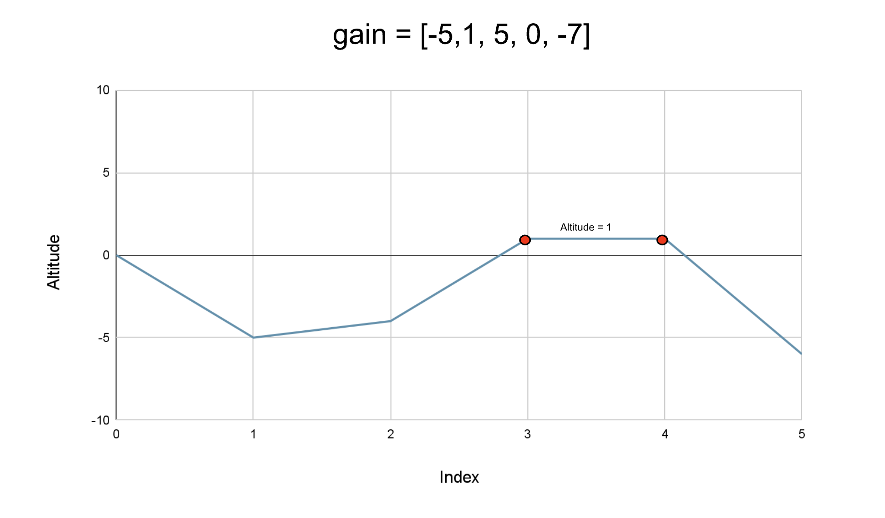

Intuition
We start from the altitude 0 and we have a list of NN
integers, where each integer represents the gain in altitude at each step (it could be negative as well, which
implies a fall in altitude) a biker takes. We need to return the highest altitude of the biker in the complete
journey, including the starting point at 0.
This can be solved by taking the maximum altitudes at each step in the journey. The altitude at a step can be
determined as the altitude at the previous step plus the gain at the current step. Hence, we will start from
0 and keep adding the gain in altitude to it at each step, and after each addition, we will update the
maximum altitude we have seen so far.

If we observe closely, the altitude at a point is the sum of gains on the left of it, which is nothing but the prefix sum at this index. Therefore, we can find the prefix sum and return the maximum as the highest reached altitude.
Algorithm
currentAltitude to 0; this is the current altitude of the
biker.
highestPoint to currentAltitude, as the highest altitude we
have seen is 0.
gain and add the current gain
altitudeGain to the variable currentAltitude.
highestPoint as necessary.highestPoint.Implementation
Java
class Solution {
public int largestAltitude(int[] gain) {
int currentAltitude = 0;
// Highest altitude currently is 0.
int highestPoint = currentAltitude;
for (int altitudeGain : gain) {
// Adding the gain in altitude to the current altitude.
currentAltitude += altitudeGain;
// Update the highest altitude.
highestPoint = Math.max(highestPoint, currentAltitude);
}
return highestPoint;
}
}
C++
class Solution {
public:
int largestAltitude(vector& gain) {
int currentAltitude = 0;
// Highest altitude currently is 0.
int highestPoint = currentAltitude;
for (int altitudeGain : gain) {
// Adding the gain in altitude to the current altitude.
currentAltitude += altitudeGain;
// Update the highest altitude.
highestPoint = max(highestPoint, currentAltitude);
}
return highestPoint;
}
};
Python3
class Solution:
def largestAltitude(self, gain: List[int]) -> int:
current_altitude = 0
# Highest altitude currently is 0.
highest_point = current_altitude
for altitude_gain in gain:
# Adding the gain in altitude to the current altitude.
current_altitude += altitude_gain
# Update the highest altitude.
highest_point = max(highest_point, current_altitude)
return highest_point
Complexity Analysis
Here, NN
is the number of integers in the list gain.
Time complexity: O(N)O(N).
We iterate over every integer in the list gain only once, and hence the total time complexity is
equal to O(N)O(N).
Space complexity: O(1)O(1).
We only need two variables, currentAltitude andhighestPoint; hence the space
complexity is constant.